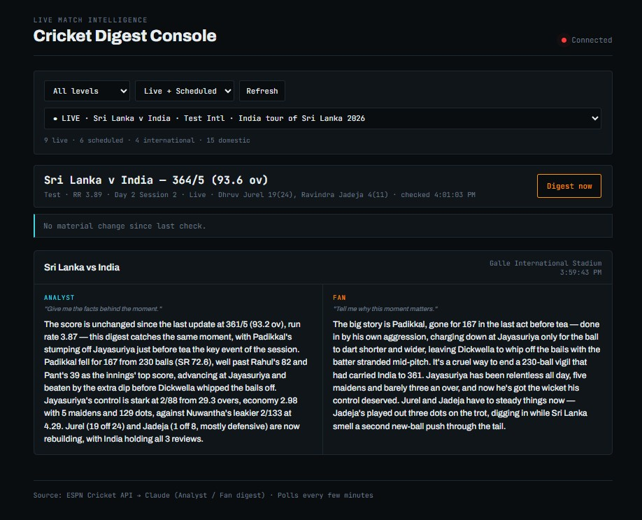

Projects
Three systems I built alone.
Each one has a live link, a public repository, and a section on what failed. The numbers on this page are reproducible — the code that produced them is one click away.
Premier League Supercomputer
Python · Dixon-Coles · Monte Carlo · GitHub Actions · Live
An expected-goals model that simulates the rest of the season 20,000 times, refits itself after every gameweek, grades its own past predictions against the bookmakers, and emails the result. It runs on GitHub Actions' free tier and costs nothing.
The problem
Pre-season football forecasts are mostly assertion. They're published once, never scored, and the reader has no way to know whether the model was right last year. I wanted the opposite: a forecast that keeps a permanent record of what it predicted before each gameweek, and marks itself against the closing market.
The hard constraint
Zero budget. No paid data, no paid compute. Everything runs inside GitHub Actions' free tier on free public sources — Understat, football-data.co.uk, the Fantasy Premier League API, Wikipedia. A full run — refit, 20,000 simulations, render, email — takes about 40 seconds on one CPU core.
What it actually does
Dixon-Coles attack and defence ratings on a 70/30 blend of non-penalty expected goals and actual goals, twelve seasons deep, exponentially weighted with a 154-day half-life. A regularised plus-minus model over 200,000 player-match records turns squads into computable ratings, which is what makes transfers register at all.
Minutes are budgeted per club and redistributed within position when a player is unavailable — a missing striker is covered by the backup striker, not by a centre-back. That single rule is what lets squad depth show up in the numbers: a club losing a forward barely moves if two capable deputies exist, while a club with one specialist in that role is hit much harder.
Uncertainty comes from two sources, both required. Bootstrap resampling captures how little we know about the ratings themselves; a drift term captures genuine squad change over a summer. Bootstrap alone gives 80% intervals that cover only 55–70% of outcomes. Adding the measured drift brings coverage to 77%.
Validation — walk-forward, always
The model is refitted using only data available at the time and never sees a result before predicting it.
| Ranked probability score | Model | Bookmaker |
|---|---|---|
| All held-out matches | 0.20373 | 0.20153 |
Within 1.1% of the closing market, on free data, with no team news.
| Model | Mean absolute error (points) | Rank correlation |
|---|---|---|
| Naive baseline — last season's table | 10.95 | 0.690 |
| Club ratings only | 9.389 | 0.758 |
| Plus squad layer | 9.264 | 0.770 |
| Plus manager layer — shipped | 9.216 | 0.772 |
The eventual champion appeared in the model's top three in all seven backtested seasons.
What was tested and rejected
Four things failed the same gate the shipped layers passed. They are switched off, and the code is still in the repository so the results can be checked.
| Rejected | Why |
|---|---|
| Market odds blend | Marginal error gain, worse ranking and calibration |
| Manager effects, all changes | Worse on every metric |
| Manager values from foreign leagues | Player conversion already weak at n≈200 |
| Fixture congestion | Effect reverses sign between eras, fails out-of-sample |
The manager failure is the one worth reading. Version one penalised Bournemouth for hiring Iraola and Liverpool for hiring Slot, who then won the league. The layer couldn't distinguish "this manager is worse" from "we have never seen this manager before" — both incoming managers had no Premier League record and were entered as league average. Restricting the layer to moves where both managers have a Premier League record flips the result. That version ships.
Fixture congestion is the one I most wanted to be true. I built two datasets for it: 1,488 domestic cup ties and 735 UEFA matches involving English clubs, 2014 to 2026. European knockout ties did appear to leave a defensive mark. Then I backtested it walk-forward across seven seasons and 150 affected matches. Four seasons prefer no adjustment, three prefer the largest one, and across all seven the net effect is +0.00002 — nothing. Shipping it would have meant fitting three seasons of noise, so congestion is not modelled.
A finding I didn't expect
Championship points do not predict Premier League performance.
Across 33 promoted clubs since 2015 the correlation is +0.043. Norwich went up with 97 points and were the worst promoted side in the sample; Wolves went up with 99 and were the best. A regression on Championship points performs no better than a flat average, so every promoted club gets the same prior with a deliberately wide error bar.
The product decision I'd defend
The scheduler doesn't run weekly. It polls every two hours and publishes only when every fixture in a gameweek has been played, a set delay has passed, and that gameweek hasn't already been published. Five gameweeks this season end on a Wednesday, which a fixed weekly cron handles badly.
Separately, a refresh run on Fridays and Tuesdays re-reads squads and injuries without emailing. Team news lands on Thursday and Friday while a publish happens on Tuesday — without the refresh, the injury data would be a median of 6.7 days old by the time the next round kicked off. A refresh never writes to the history folder, so the record of what was predicted before each gameweek stays intact for the accuracy scoring.
Limitations
Stated plainly, because a model that hides these isn't worth reading. Pre-season error is around nine points per club, and no pre-season model is much better. Signings from outside Europe's big five leagues are valued at league average. Manager changes where the incoming manager has no Premier League record aren't scored at all. Home advantage is one league-wide value, not per club.
And the minute-allocation rules are reasoned, not backtested. The backtest uses the minutes players actually recorded, so the 90-minute cap and the positional redistribution never run there and cannot be validated statistically. They are corrections to an obvious error — the previous version sent a missing striker's minutes to the goalkeeper — but the seven-season evidence behind the squad layer measures the layer, not these rules.
Cricket AI Digest
Node · ESPN Cricket API · Claude · WebSocket
One live cricket feed in, two reader-specific briefings out. An Analyst view for the facts behind the moment, a Fan view for why the moment matters, both generated from the same raw match state and pushed to a live console.

Why this exists
A score notification is the same alert for everyone. This is a translation layer. The cricket is incidental — the shape is raw feed, then reasoning layer, then persona-specific briefing, which is the shape of most business data delivery problems I work on professionally.
Two gates, doing two different jobs
Polling is cheap. Calling a language model on every tick is not, and worse, it produces a stream of digests that say nothing.
- A cheap fingerprint on a 6 KB scoreboard endpoint. Unchanged, and nothing else fires — no further calls at all.
- A materiality check on the 270 KB summary. A wicket, a new innings, a batter milestone, a follow-on enforced, a fourth-innings target set.
Deliberately invisible: singles, twos, boundaries, dot balls, maidens, over-by-over ticking. The first gate saves bandwidth. The second saves money. Ungated at 60-second polling it would be roughly 480 model calls a day; gated, a whole T20 costs about 14 cents.
The decision I'd defend: thresholds are format-aware
Fifty runs is an hour's grind in a Test and five overs in a T20. Over ten is a routine marker in a Test and the halfway point of a T20 innings. So the thresholds differ, driven by the format ESPN reports.
| Trigger | Test | ODI | T20 |
|---|---|---|---|
| Over step | 10 | 10 | 5 |
| Key overs | 80 — second new ball | 10, 40 | 6, 16 |
| Digest floor | 180s | 120s | 90s |
The key overs are the point. None of them fall on a regular step, so a modulo rule alone misses the T20 powerplay transitions entirely — which are exactly the moments a fan most wants explained.
What I got wrong, and found by reading the raw payload
Two traps in ESPN's schema, both caught before they shipped and both documented inline in the code.
matchcardsis not an innings list. It's Batting, Bowling and Partnership cards for a single innings. The correct source for runs, wickets and overs is the linescores array on the header competitors.- ESPN mirrors bowling overs into the non-batting side's linescore, so a team that hasn't batted at all appears as
0/0 (73 ov). Those rows are dropped. Otherwise the model confidently reports a scoreline that never happened.
The second one is the lesson, and it's why there's a debug endpoint that returns the exact object handed to the model. A digest generated from all-null fields still looks like a success in the logs. If I can't read that JSON and immediately recognise the match, neither can the model.
Hallucination control
An instruction not to invent data does nothing if you hand the model a form with every box empty.
The prompt's most important rule is: if a field is absent, omit that point entirely, never estimate. And the generator strips null and empty values before serialising, so the model never sees a blank slot to fill in the first place.
Honest scope
This is a working demonstration of a pattern, not a notification product, and it doesn't compete with Cricbuzz. It depends on an undocumented third-party endpoint with active bot protection, which could stop working at any time. A verified quirk: ESPN returns 403 for browser user-agents from datacenter addresses but 200 for a curl user-agent from the same address. If they tighten that, this stops working and there is no fallback.
State lives in memory, so history is lost on restart. Either the panel is labelled session history or it moves to a database. And The Hundred is 100 balls rather than overs, so format detection falls it through to T20 and the over-based triggers there are untested.
FPL Auto Manager
Python · AWS Lambda · Linear programming · Claude with web search · Live
An autonomous Fantasy Premier League manager. It rates every player, plans transfers, picks the starting eleven and the captain, submits all of it, and emails the reasoning. It runs unattended on AWS Lambda, publishes its projection before kickoff, and gets marked against a human.
Two scores, not one
Who you own is a five-gameweek question, because transfers are scarce and a player is bought for a run of fixtures. Who starts is a this-week question. One number can't answer both: weight it forward and captaincy suffers, weight it on this week and transfers become short-sighted. So it computes both.
The mistake that rebuilt the model
The first version used FPL's own projection field. It turned out to be a placeholder before a season starts — about 24 distinct values across 570 players, capped at 4.0, so a backup goalkeeper and the best striker in the league scored identically. Ranking on it did real damage: in one run the bot sold three of the squad's best per-game players and bought a forward who had started three games all season.
The code ran perfectly. The thinking was wrong.
The replacement, and how it was checked
A regression on 874 player-season pairs from 2009 onwards, validated by fitting on the older half of the seasons and testing on the newer.
| Predictor | Out-of-sample R² |
|---|---|
| Points per 90 alone | 0.302 |
| Plus expected goal involvement and ICT | 0.368 |
Correlation with next-season output went from 0.30 to 0.49 against a points-only baseline. Expected goal involvement earns its weight because it regresses less than actual goals: a player who created plenty of chances but finished badly is correctly rated above their raw points.
The threshold I had to find by backtest
Embedding last season's data made things worse at first. Fringe players topped the rankings, because someone with 90 minutes and one lucky return had a per-90 rate that looked elite. Shrinkage was being applied to live data but not to the snapshot. A backtest on 1,001 player-season pairs gave a clean answer.
| Prior-season minutes | Snapshot | Price | Better predictor |
|---|---|---|---|
| 1 – 300 | −0.083 | −0.005 | Price |
| 300 – 900 | 0.634 | 0.400 | Snapshot |
| 900 – 2000 | 0.593 | 0.316 | Snapshot |
| 2000+ | 0.624 | 0.432 | Snapshot |
Below 300 minutes, last season's rates predict worse than nothing. So the snapshot earns weight only past 300 minutes, reaching full weight at 900.
A related judgement: players with fewer than two pre-season friendlies are excluded from the table entirely rather than penalised, because zero minutes is ambiguous. One striker had none because he'd been at the World Cup until mid-July and was then rested. Another had none because of a long-term injury. A third might be out of favour. The data cannot tell them apart, so it doesn't try.
It degrades instead of failing
FPL retired the login endpoint this project depended on, mid-build. Rather than patch around it, I rebuilt the system so that being unable to sign in produces a different outcome rather than a failed one: it emails me the same decisions to apply by hand. No missed deadlines since.
The optimiser works the same way. No linear programming layer available means a pure-Python fallback within about 1% of optimal, with a line in the log saying which one ran.
The constraint I'm proudest of
The language model is only ever allowed to lower a rating.
Team news — rotation, a manager resting someone, a signing short of match fitness — is read by Claude with web search. It can reduce a player's projection and never raise it, so a wrong call costs at most one player rather than talking the bot into a bad buy. It ran in shadow mode until its judgement had been checked against several gameweeks.
What it deliberately doesn't do
- Play chips. Wildcard, Free Hit, Bench Boost and Triple Captain are one-shot decisions worth too much to hand to a threshold. It flags them and stops.
- Model price changes. Not attempted.
- Distinguish reliable from explosive. It scores averages, so it can't tell a dependable six from a volatile one — which is exactly the difference that wins a gameweek. This is the largest known gap.
- Plan beyond five gameweeks. The horizon is a tunable constant.